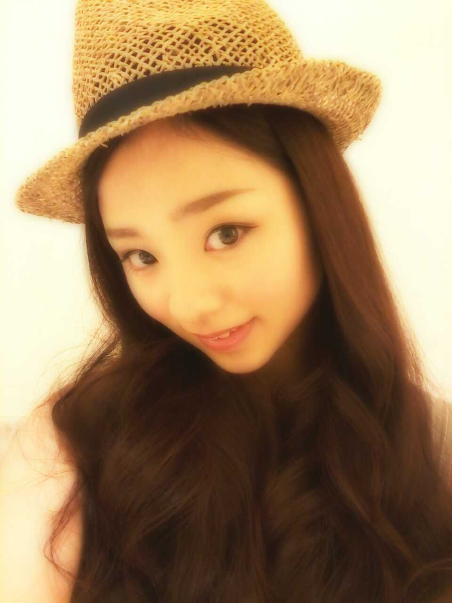

| 2012/08 16 Thu | 初単独ライブ!! Zepp難波( ^ー^) ろってぃー♪ |
ほっほーーーい ミ☆
みなさん 今日も
おつかれさまです*^^*
今 ひめかとホテルに
泊まっている
ろってぃーです=・ω・=
いぇいッ))

月曜 13日(Zepp難波)
火曜 14日(Zepp名古屋)は
乃木坂46☆ 初のっ!!!
単独ライブでしたww
私は 13日に,
私の地元である大阪っ))
Zepp難波のライブに
出ました・ω・´
私達メンバー全員が
「ライブがしたい」
「ライブがしたい」と
ずっと言っていたので
今回 こうやってライブが
できる!!
って聞いた時は
本当に嬉しかったです*^^*!
いつも支えてくれてる
応援してくださってる
ファンの皆様に
恩返しをするため
本当にいい,最高な
ステージにしなきゃなっ＼(^-^)／
って思ってました。
今回、私達のライブを
つくってくださった
スタッフの皆様にも
感謝しています。
本当にありがとうございます。
見にきてくださった方々
本当に遠くからだとか
お忙しい中なのに
私達乃木坂46のステージを
見に来てくださって
本当に本当に
ありがとうございます
(⌒‐⌒)
今回のライブ
これなかったけど
行きたいなと思ってくれた方にも
お礼を言いたいです^^
乃木坂のライブに行きたいな。
って思ってくださっただけでも
とっても
嬉しい気持ちーー〃ω〃
です。♪
ありがとうございます。
雛壇の上で踊るとゆうのも
初の経験だったし*^^*
それに、
あんなにもの大勢の前で
セクシーボイスを
やったのもだ...*=ω=*笑
好きなどんぶりものは?って
質問を
セクシーボイスで
答えるとゆうのがあって
お・や・こ・ど・ん。
って言いました...
照れちゃ〜〜う(^-^))
それでは、
また 更新します*^^*
本当に本当に
ありがとう。
みんな大好き*^^*!
以上っ
ろってぃーでした＼(^-^)／

のし。
コメント(363)
2012/08/16 09:36